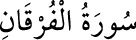

<a name=5667></a><br/>
<b>25-FURKAN SÛRESİ</b><br/>
<i><b>Mekke’de nâzil olmuştur. 77 âyettir. Sûre adını ilk âyette geçen “el-Furkan”</b></i><br/>
<i><b>kelimesinden alır. “Furkan”, hakkı bâtıldan ayırdeden demektir. Kur’ân-ı<br/>Kerim’in isimlerindendir.</b></i><br/>
